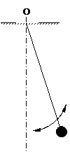
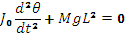

Mechanical Engineering →Vibration and Acoustics →List Of Experiments
MI of Connecting Rod
Aim
To find mass moment of inertia of a connecting rod from its vibration as a compound pendulum.
Background:-
|
Simple pendulum: A bob attached to a thread or string hanging from a pivot constitutes a simple pendulum. As the size of the bob is small compared to the length of the thread, the mass of the bob can be considered to be concentrated at its centre and treated as a point mass. The mass of the thread is very small compared to that of the bob, it is neglected. Also, the thread is considered inelastic and inextensible and effects due to these properties are neglected while studying the oscillations of the bob about the pivot. Thus, the bob oscillates about the pivot when disturbed from its equilibrium position and left to its own. The period of such oscillations is given by
 These oscillations are undamped natural vibration of the simple pendulum. Physical systems like a swing in children’s park, load hanging from a cable of a crane, can be modelled as simple pendulum. |
 | |
|
Compound Pendulum: Consider the oscillations of a solid body about the point of suspension ‘O’ (pivot) as shown in the figure.
The pivot is at point O and the centre of mass of the body is at G. Let the distance between the pivot and the centre of mass of the body be L. When the body is displaced from its equilibrium position and left to its own, it oscillates about O. Such an arrangement is called compound pendulum. Unlike simple pendulum, the mass is distributed all along the length of the oscillating body and takes part in the oscillations. Equation of motion of the compound pendulum is derived by taking moments of the inertia-force and force due to gravity about the pivot ‘O’ and is given by
 Where, J0, M, and θ are respectively the mass moment of inertia of the oscillating body about the pivot, total mass of the oscillating body, and angle of oscillation (angle between the line OG while oscillating and the vertical position of equilibrium). The period of oscillation of a compound pendulum is obtained from solution of above equation and is given by,  (Period of oscillation = Time required to complete one oscillation) Mass moment of inertia about the centre of mass, ‘G’, is given by  Mass Moment of Inertia: Moment of a point mass m about another point or a line is given by the product of the mass m and distance between another point or perpendicular distance between the line and location of the mass. For a solid body, its mass is distributed all over its volume. So when we want to calculate its mass moment of inertia about a point, every elemental mass of the body is at different distance from the point about which we want to take its moment. So we resort to use of calculus and find the mass moment of the body by integrating the product of the elemental mass and its square of its distance from the another point under consideration. Another point of consideration is usually the centre of gravity of the body itself and we find the mass moment of inertia of the body about its own centre of gravity. Thus for a slender rod, which can be considered as one-dimensional body, the mass moment about its centre of gravity is given by, 
Similarly, we can find mass moment of inertia for a two or three dimensional solids using double or triple integration. However, finding mass moment of inertia of solids using analytical expressions as above is possible only for solids of regular geometry like a cylinder and sphere. For solids of irregular geometry like a connecting rod or any link use in a mechanism of any machine, the analytical method cannot be used and we need to use an experimental method as discussed in the present experiment.
Importance of knowing mass moment of inertia: Machines have several parts (links) connected to each other that have linear or angular motion with changing acceleration which result in inertia forces and moments. In order to calculate the moments due to inertia, we must know the mass moment of inertia of the part that has angular motion about a point. The mass moment of inertia of the part (or a link) can be found from period of oscillation of the compound pendulum formed by pivoting the link and setting it into oscillations as explained earlier.
|
 |